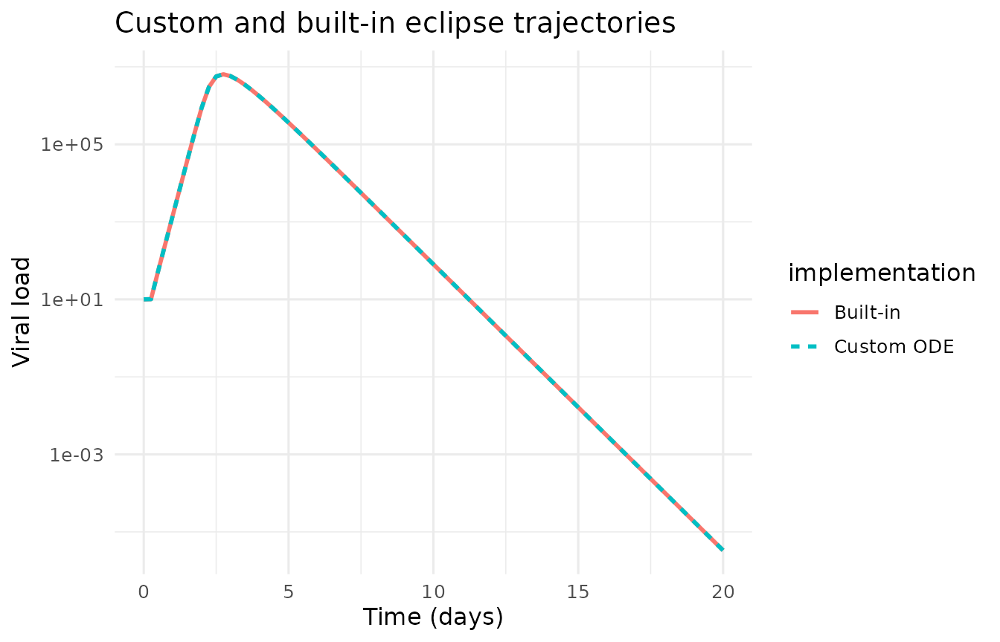
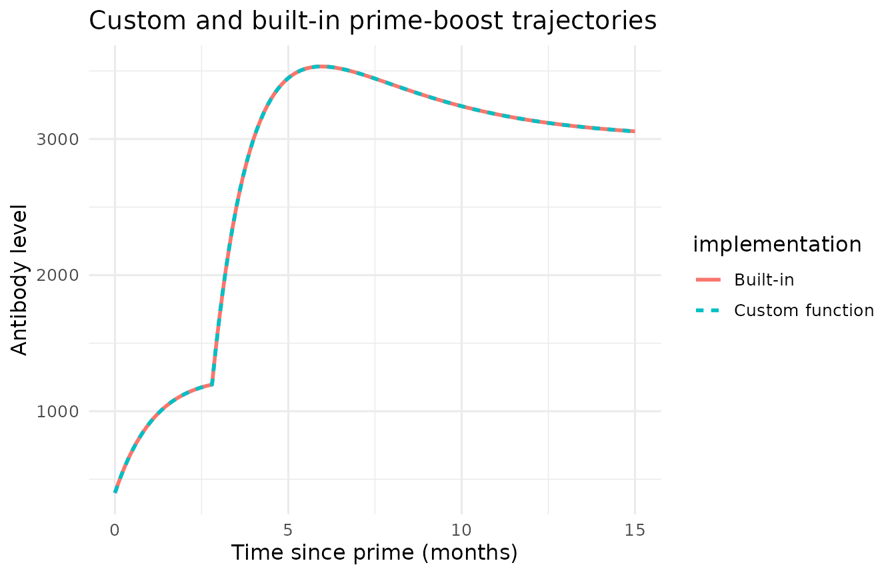
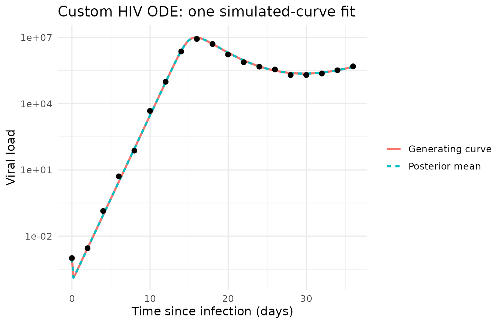
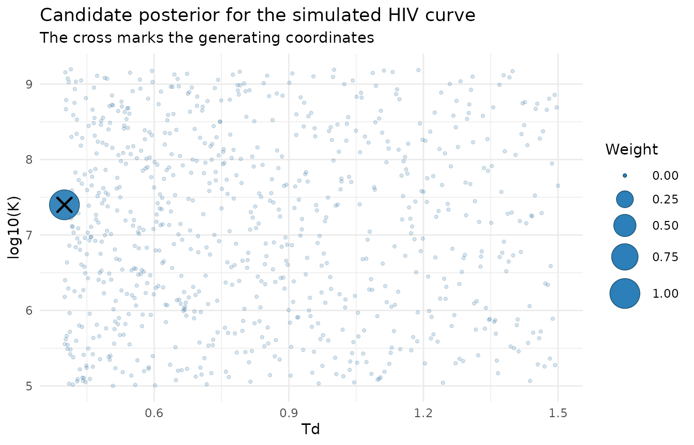

The custom-trajectory contract
MBMM does not require a built-in ODE. The user supplies a candidate data frame with one parameter vector per row and a function with arguments time and theta. The function returns one finite, positive prediction for every requested time, on the natural measurement scale.
my_trajectory <- function(time, theta) {
# unpack one candidate row, solve the ODE, return the observable
}
LL <- trajectory_loglik(
obs, candidates, trajectory = my_trajectory, sigma = 0.3
)This function is the only point at which the mechanistic model enters MBMM. Before coding it, specify:
| Component | What to enter |
|---|---|
| ODE states | Named quantities whose derivatives are modelled |
| Initial state | One initial value for every ODE state |
| Parameters | Rate constants or identifiable combinations |
| Fixed constants | Values repeated in every candidate row |
| Observable | State returned to the likelihood |
| Time unit | The same unit for observations, solver and parameters |
The trajectory function returns the natural-scale observable, not its logarithm. The likelihood applies its own base-10 log observation model.
Rebuild the built-in eclipse model from scratch
The eclipse model has states :
The initial state is , and the observable is .
eclipse_from_scratch <- function(time, theta) {
rhs <- function(t, state, parameters) {
with(as.list(c(state, parameters)), {
infection <- beta * U * V
list(c(
-infection,
infection - kappa * I1,
kappa * I1 - delta * I2,
p * I2 - c_clear * V
))
})
}
grid <- sort(unique(c(0, time, seq(0, max(time) + 1, by = 0.1))))
initial <- c(U = theta$T0, I1 = 0, I2 = 0, V = theta$V0)
parameters <- as.list(theta[1, c("beta", "kappa", "delta", "p",
"c_clear")])
solution <- deSolve::ode(initial, grid, rhs, parameters)
approx(solution[, "time"], pmax(solution[, "V"], 0),
xout = time, rule = 2)$y
}Every candidate row contains fitted quantities and fixed constants.
eclipse_candidate <- data.frame(
beta = 3e-6, kappa = 2.6, delta = 1.7, p = 16,
c_clear = 10, T0 = 1e7, V0 = 10
)
eclipse_time <- seq(0, 20, by = 0.25)
custom_eclipse <- eclipse_from_scratch(eclipse_time, eclipse_candidate)
builtin_eclipse <- with(
eclipse_candidate,
eclipse_trajectory(eclipse_time, beta, delta, p, V0,
kappa = kappa, c_clear = c_clear, T0 = T0)
)
max_relative_difference <- max(
abs(custom_eclipse - builtin_eclipse) /
pmax(builtin_eclipse, 1e-12)
)
max_relative_difference
#> [1] 0
Rebuild the built-in prime-boost model from scratch
The reduced prime-boost model has short-lived production and measured antibody :
At the boost, short- and long-lived production receive increments. For fixed rates, the solution can be evaluated directly.
andraud_from_scratch <- function(time, theta) {
ms <- theta$ms
mA <- theta$mA
boost <- theta$t_boost
if (abs(mA - ms) < 1e-10) ms <- ms + 1e-8
C3 <- theta$A0 - theta$C1 - theta$C2
antibody_at_boost <- theta$C1 +
theta$C2 * exp(-ms * boost) + C3 * exp(-mA * boost)
D3 <- antibody_at_boost - theta$D1 - theta$D2
prediction <- ifelse(
time < boost,
theta$C1 + theta$C2 * exp(-ms * time) +
C3 * exp(-mA * time),
theta$D1 + theta$D2 * exp(-ms * (time - boost)) +
D3 * exp(-mA * (time - boost))
)
pmax(prediction, 0.01)
}
antibody_candidate <- data.frame(
A0 = 400, C1 = 1200, C2 = 250, D1 = 3000, D2 = 2200,
ms = 0.3, mA = log(2) / (26 / 30), t_boost = 84 / 30
)
antibody_time <- seq(0, 15, by = 0.1)
custom_antibody <- andraud_from_scratch(antibody_time, antibody_candidate)
builtin_antibody <- with(
antibody_candidate,
andraud_trajectory(antibody_time, A0, C1, C2, D1, D2, ms,
mA = mA, t_boost = t_boost)
)
max(abs(custom_antibody - builtin_antibody))
#> [1] 0
Set parameter ranges with a familiar box
An identifiable reparameterisation is not required. If the original ODE parameters and plausible ranges are familiar, draw candidates directly.
draw_parameter_box <- function(n, ranges, log10_parameters = character(),
seed = NULL) {
if (!is.null(seed)) set.seed(seed)
values <- lapply(names(ranges), function(parameter) {
limits <- ranges[[parameter]]
if (parameter %in% log10_parameters) {
10^runif(n, log10(limits[1]), log10(limits[2]))
} else {
runif(n, limits[1], limits[2])
}
})
names(values) <- names(ranges)
as.data.frame(values)
}
raw_box <- draw_parameter_box(
n = 200,
ranges = list(
beta = c(1e-9, 1e-5),
delta = c(0.1, 1.5),
p = c(1e3, 3e6)
),
log10_parameters = c("beta", "p"),
seed = 4
)
raw_box$c_clear <- 23
raw_box$T0 <- 1e4
raw_box$d_target <- 0.031
raw_box$V0 <- 1e-3
head(raw_box, 3)
#> beta delta p c_clear T0 d_target V0
#> 1 2.203947e-07 1.1545718 1221429.025 23 10000 0.031 0.001
#> 2 1.085883e-09 1.2101521 9362.835 23 10000 0.031 0.001
#> 3 1.496093e-08 0.7358486 1627.539 23 10000 0.031 0.001For any box:
- choose bounds before fitting;
- use log-uniform sampling for positive quantities spanning orders of magnitude;
- add fixed constants and initial conditions as candidate columns;
- solve the complete box on a dense time grid;
- reject non-finite or non-positive predictions;
- compare the envelope of candidate curves with the observations;
- report fitted weight near every boundary; and
- repeat with wider bounds when boundary weight is substantial.
A raw box remains usable when no identifiable construction is known. Identifiable or shape-based coordinates are preferable when available because they often cover observable curve shapes more evenly.
New custom ODE: the HIV constant-beta model
The target-cell-limited constant-beta system is
The states are , the initial state is , and the observable is .
hiv_beta_constant <- function(time, theta) {
rhs <- function(t, state, parameters) {
with(as.list(c(state, parameters)), {
infection <- beta * T * V
list(c(
d_target * (T0 - T) - infection,
infection - delta * I,
p * I - c_clear * V
))
})
}
grid <- sort(unique(c(0, time, seq(0, max(time) + 0.5, by = 0.2))))
initial <- c(T = theta$T0, I = 0, V = theta$V0)
parameters <- as.list(theta[1, c("beta", "delta", "p", "c_clear",
"T0", "d_target")])
solution <- deSolve::ode(initial, grid, rhs, parameters,
atol = 1e-8, rtol = 1e-8)
approx(solution[, "time"], pmax(solution[, "V"], 1e-12),
xout = time, rule = 2)$y
}Option A: use the raw box
The raw_box object can be passed directly to hiv_beta_constant. Inspect the resulting doubling times and attainable peaks, then check boundary weight after fitting.
Option B: construct an identifiable bank
Define growth and peak capacity . Use:
| Coordinate | Range | Sampling scale |
|---|---|---|
| Doubling time | 0.4 to 1.5 days | log-uniform |
| Peak capacity | 5.0 to 9.2 | uniform on log10 scale |
| Infected-cell loss | 0.1 to 1.5 per day | uniform |
Fix , , , and . Derive
hiv_identifiable_design <- function(n, seed = NULL) {
if (!is.null(seed)) set.seed(seed)
lhs <- function() (sample.int(n) - runif(n)) / n
Td <- 10^(log10(0.4) + lhs() *
(log10(1.5) - log10(0.4)))
K <- 10^(5.0 + lhs() * (9.2 - 5.0))
delta <- 0.1 + lhs() * (1.5 - 0.1)
c_clear <- 23
T0 <- 1e4
d_target <- 0.031
V0 <- 1e-3
growth <- log(2) / Td
p <- K * c_clear / T0
beta <- (growth + delta) * (growth + c_clear) /
(K * c_clear)
data.frame(Td, K, delta, beta, p,
c_clear, T0, d_target, V0)
}
hiv_candidates <- hiv_identifiable_design(800, seed = 11)
summary(hiv_candidates[c("Td", "K", "delta")])
#> Td K delta
#> Min. :0.4006 Min. :1.002e+05 Min. :0.1003
#> 1st Qu.:0.5566 1st Qu.:1.122e+06 1st Qu.:0.4506
#> Median :0.7745 Median :1.260e+07 Median :0.8000
#> Mean :0.8322 Mean :1.638e+08 Mean :0.8000
#> 3rd Qu.:1.0779 3rd Qu.:1.406e+08 3rd Qu.:1.1496
#> Max. :1.4999 Max. :1.570e+09 Max. :1.4996Simulate and fit one curve
This example uses a known infection clock, so no time shift is needed.
hiv_truth <- data.frame(
Td = 0.4, K = 10^7.4, delta = 0.65,
c_clear = 23, T0 = 1e4, d_target = 0.031, V0 = 1e-3
)
growth <- log(2) / hiv_truth$Td
hiv_truth$p <- hiv_truth$K * hiv_truth$c_clear / hiv_truth$T0
hiv_truth$beta <- (growth + hiv_truth$delta) *
(growth + hiv_truth$c_clear) /
(hiv_truth$K * hiv_truth$c_clear)
hiv_candidates <- rbind(hiv_truth[names(hiv_candidates)], hiv_candidates)
hiv_time <- seq(0, 36, by = 2)
hiv_mean <- hiv_beta_constant(hiv_time, hiv_truth)
set.seed(91)
hiv_obs <- data.frame(
id = 1,
time = hiv_time,
value = 10^(log10(hiv_mean) + rnorm(length(hiv_time), 0, 0.1))
)Score all candidates. For this one-curve interface demonstration, begin with equal candidate weights and normalise the likelihoods.
hiv_LL <- trajectory_loglik(
hiv_obs, hiv_candidates, hiv_beta_constant, sigma = 0.1
)
log_posterior <- hiv_LL[1, ] - max(hiv_LL[1, ])
hiv_posterior <- exp(log_posterior)
hiv_posterior <- hiv_posterior / sum(hiv_posterior)
recovery <- data.frame(
coordinate = c("Td", "log10(K)", "delta"),
truth = c(hiv_truth$Td, log10(hiv_truth$K), hiv_truth$delta),
posterior_mean = c(
sum(hiv_posterior * hiv_candidates$Td),
sum(hiv_posterior * log10(hiv_candidates$K)),
sum(hiv_posterior * hiv_candidates$delta)
),
maximum_posterior = c(
hiv_candidates$Td[which.max(hiv_posterior)],
log10(hiv_candidates$K[which.max(hiv_posterior)]),
hiv_candidates$delta[which.max(hiv_posterior)]
)
)
recovery
#> coordinate truth posterior_mean maximum_posterior
#> 1 Td 0.40 0.40 0.40
#> 2 log10(K) 7.40 7.40 7.40
#> 3 delta 0.65 0.65 0.65
dense_time <- seq(0, 36, by = 0.2)
hiv_curves <- vapply(seq_len(nrow(hiv_candidates)), function(j) {
hiv_beta_constant(dense_time, hiv_candidates[j, , drop = FALSE])
}, numeric(length(dense_time)))
posterior_mean_curve <- as.vector(hiv_curves %*% hiv_posterior)

Continue from a custom ODE to MBMM
For a complete analysis:
- construct the candidate bank;
- check positivity and curve coverage;
- compute the participant-by-candidate likelihood matrix;
- estimate a population with fit_bank, or use bank_loo when cross-fitting is required;
- construct class likelihoods using Route I or Route II; and
- fit and test the gate with fit_gate and gate_test.
If observation time differs from biological time, integrate the offset:
LL <- trajectory_loglik(
obs, candidates, my_trajectory, sigma = 0.3,
lags = seq(0, 40, by = 2)
)The custom ODE supplies trajectories. The state definition and bank-honesty requirements remain those in the scientific guide, Route I walkthrough, and Route II walkthrough.